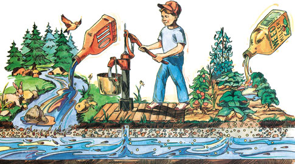
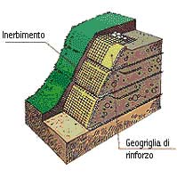
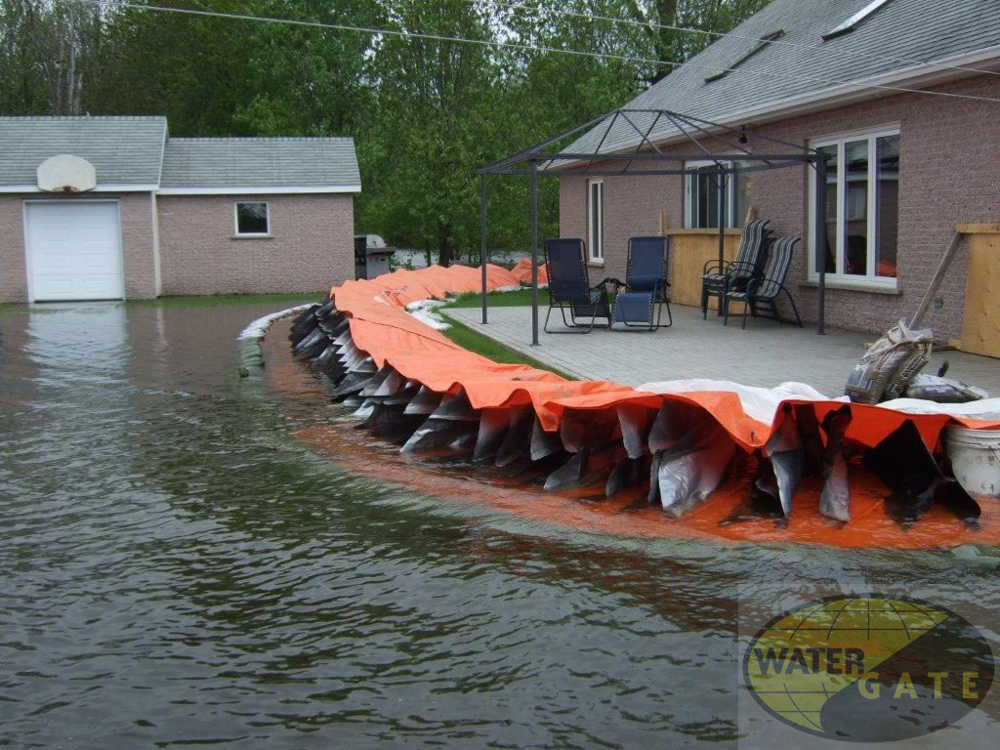
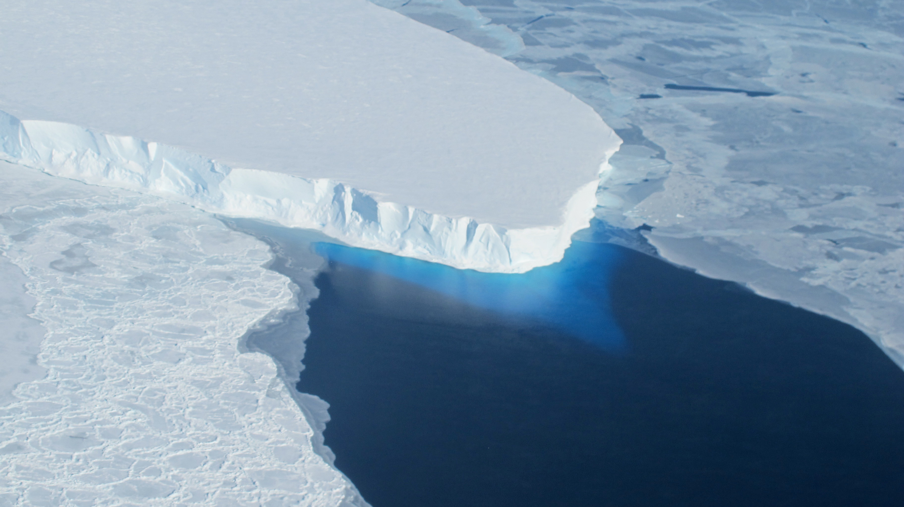
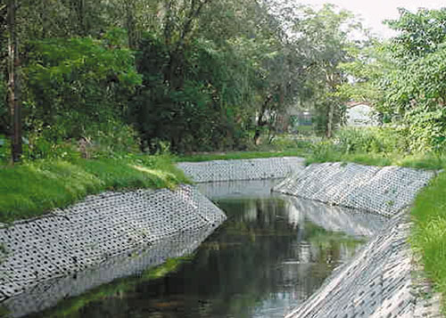

Protect Please!
How to Protect Groundwater Pollution
Use Native plants in your landscape. They look great and don't need much water or fertilizer. And then Reduce chemicals around your home and yard and make sure to dipose of them properly-don't dump them on the ground! Shut off the water when you brush your teeth or shaving and don't let it run while waiting for it to get cold. Reduce the amount of "stuff" you use and reuse what you can. Recycle paper, plastic, cardboard, glass, aluminium and other materials.
How to Protect Landslide
We can do the method ourselves by planting a groundcover on hire and trees as possible as we can. A solid, well-designed retaining should be made of sturdy materials such as masonry, brick, stone, or steel. Drainage materials behind the wall help increase the stability of the wall. For temporary landslide preventation, sandbags can be used to divert water from uncontrolled spilling just as retaining walls or diverted pathways do.
How to Protect Flooding
The creating of more wetlands-which can act as sponges, soaking up moisture- and wooded areas can slow down waters when rivers overflow. Halting deforestation and wetland drainage, reforesting upstream areas and restoring damaged wetlands could significantly reduce the impact of climate change on flooding.
How to Protect Glaciers Melting
Global Warming affect on glaciers. So, as first we need to solve global warming. And we must reduce carbon emissions. Greenhouse gas also affect the glaciers. Glaciers make to rise earth's sea level. So it is very important to protect the glaciers because it can make to die people as millions. So please reduce greenhouse gas to protect global warming that makes glaciers melting.
How to Protect Bank Erosion
One of the most common soil erosion preventation methods is vegetation. It is the simplest and most natural way to prevent erosion control through planting vegetation. Plants establish root systems, which in turn, stabilizes the soil, preventing erosion.